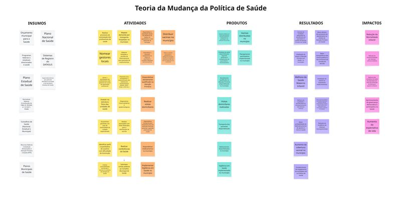
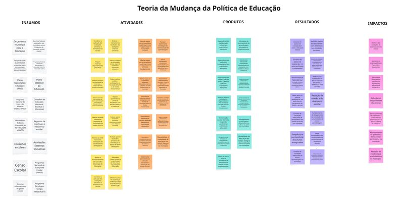
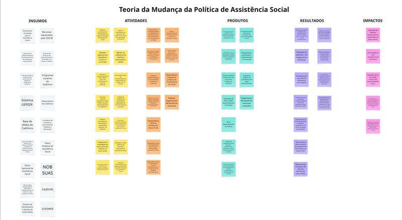

Saúde, Educação e Assistência Social. Cada teoria mapeia o caminho que liga insumos a impactos — e abre, em cada caixa, uma conversa sobre o que monitorar, o que avaliar e o que decidir.
Cada teoria de mudança é um mapa: do que se investe, passando pelo que se faz, ao que se entrega, ao que muda na vida das pessoas e, ao fim, ao impacto agregado nas cidades. Construídas a partir dos arranjos federativos brasileiros — atribuições municipais, sistemas nacionais de informação, marcos legais setoriais — elas oferecem um vocabulário comum para gestores capixabas pensarem políticas públicas como cadeias de efeito, não como ações isoladas.

Do orçamento municipal e dos sistemas DATASUS à redução da mortalidade infantil, passando pela Atenção Primária, vigilância, vacinação e atendimento qualificado.
Abrir mapa →
Do PNE e do FUNDEB às condições de aprendizagem, alfabetização e redução da evasão. Vagas, materiais, transporte, alimentação e formação de professores como engrenagens de um mesmo sistema.
Abrir mapa →
Do SUAS e do CadÚnico à interrupção do ciclo intergeracional de pobreza. CRAS, CREAS, transferência de renda, acolhimento e proteção social como uma rede coordenada.
Abrir mapa →Uma teoria da mudança torna explícita a hipótese causal por trás de uma política: se investirmos isso, fizermos aquilo, entregarmos tais produtos, então esperamos ver tais resultados — e, no longo prazo, tais impactos. Sem essa cadeia explícita, o monitoramento vira coleta de números sem norte, e a avaliação vira opinião.
As três teorias aqui apresentadas foram construídas como infraestrutura compartilhada para os municípios capixabas: um vocabulário comum, um conjunto de hipóteses testáveis, uma base sobre a qual cada secretaria pode adaptar a sua realidade local.
Cada teoria é organizada em cinco colunas, da esquerda para a direita. Leia-as como uma cadeia causal: o que está mais à direita só acontece se o que está à esquerda funcionar. Mas a direção também serve de bússola — se o impacto não vier, é em uma das colunas anteriores que está o problema.
Simplificada — exibe as caixas organizadas em colunas, sem setas. Boa para leitura panorâmica, identificação de elementos e uso em apresentações.
Completa — adiciona as setas de conexão causal entre caixas. Útil para entender exatamente qual atividade gera qual produto, e qual produto leva a qual resultado. Mais densa, indicada para uso técnico em desenho ou avaliação de programas.